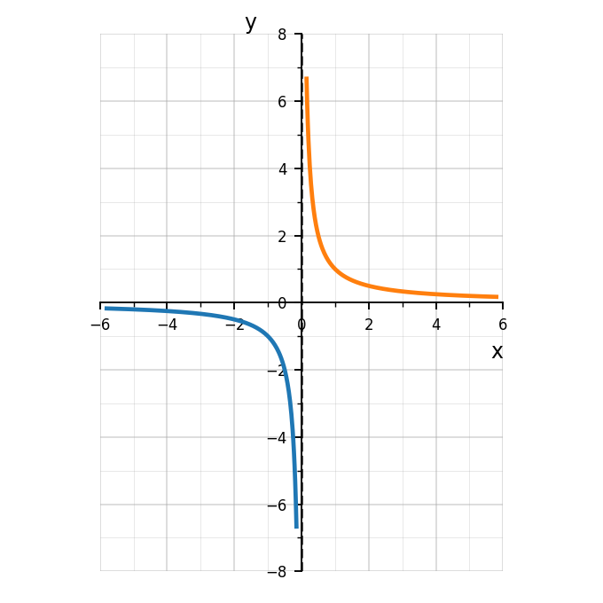

Practice Set 1.5.2
Use the graph to describe what happens to \(f(x)\) as \(x\to 2^-\) and as \(x\to 2^+\).

Complete the statement: If \(\lim_{x\to a^-} f(x)=3\) and \(\lim_{x\to a^+} f(x)=3\), then \(\lim_{x\to a} f(x)=\underline{\hspace{1in}}\).
Use the graph to determine the left-hand limit, right-hand limit, function value, and whether the two-sided limit exists at \(x=0\).

A student says, “If \(f(a)\) is undefined, then \(\lim_{x\to a} f(x)\) cannot exist.” Explain why this statement is false.
For each quadratic, determine whether the vertex is a maximum or a minimum.
\(y=x^2+6x+2\)
\(y=-2x^2+4x+5\)
\(y=5(x-3)^2-8\)
\(y=-\frac12(x+1)^2+7\)
Use the formula
\(x=-\frac{b}{2a}\)
to find the axis of symmetry for each quadratic.
\(y=x^2-8x+3\)
\(y=2x^2+12x-1\)
\(y=-x^2+10x+4\)
Match each description to the correct range.
A parabola opens up and has vertex \((3,-4)\).
A parabola opens down and has vertex \((-2,7)\).
A parabola opens up and has vertex \((0,5)\).
A parabola opens down and has vertex \((6,-1)\).
Ranges:
\(y\le 7\)
\(y\ge -4\)
\(y\le -1\)
\(y\ge 5\)
Which function has a minimum value of \(-6\)?
\(y=(x+4)^2-6\)
\(y=-(x+4)^2-6\)
\(y=(x-6)^2+4\)
\(y=-6(x+4)^2\)
For the function
\(g(x)=-x^2+8x-10\)
find:
the \(y\)-intercept
the axis of symmetry
the vertex
whether the vertex is a maximum or minimum
the range
A quadratic function has zeros \(x=1\) and \(x=9\).
Find the axis of symmetry.
If the graph opens downward, where is the function increasing?
If the graph opens downward, where is the function decreasing?
What kind of value does the vertex represent?
A student says:
“The range of \(y=-3(x-2)^2+5\) is \(y\ge 5\) because the vertex has \(y=5\).”
Explain the mistake and state the correct range.
A farmer has \(100\) meters of fencing to enclose a rectangular field along a river. No fencing is needed along the river. Let \(x\) be the width perpendicular to the river.
Write an area function in terms of \(x\).
Find the dimensions that maximize area.
Find the maximum area.
State a reasonable domain for the model.
Explain why the domain is restricted in context.
Evaluate each expression when \(a=-2\).
\(a^2+3\)
\(4a-7\)
\(-2a^2\)
\((a+5)^2\)
If \(g(x)=x^2-5\), evaluate each.
\(g(0)\)
\(g(2)\)
\(g(-2)\)
\(g(5)\)
If \(g(x)=\frac{x+6}{x-2}\), evaluate each.
\(g(3)\)
\(g(8)\)
\(g(0)\)
Explain why \(g(2)\) is undefined.
A student evaluates \(f(x)=x^2+4x\) at \(x=-3\) and writes:
\[f(-3)=-3^2+4(-3)=-9-12=-21.\]
Identify the error and evaluate correctly.